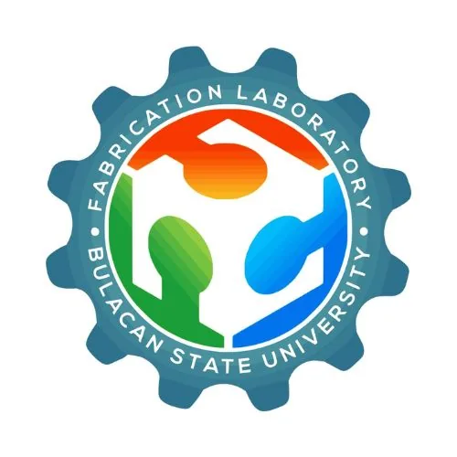

BulSU FABLAB Center
Bulacan State University · Region III
The BulSU FABLAB Center — formally known as the Center for Fabrication and Manufacture — is Bulacan State University's digital fabrication laboratory, providing hands-on access to advanced manufacturing technologies for students, MSMEs, and the community in Malolos, Bulacan. The center's equipment suite spans metal, acrylic, wood, and plastic fabrication — encompassing subtractive milling, laser engraving, and 3D additive manufacturing — making it one of the more versatile fabrication facilities in Region III.
- Category
- Fabrication Laboratory (FabLab)
- Host institution
- Bulacan State University
- City
- Malolos, Bulacan
- Region
- Region III
- Operating status
- Operating
About the Center
BulSU's engineering and technology programs provide the academic and technical backbone for the center's operations, supporting both student learning and industry prototyping needs in the Central Luzon region. The FabLab serves as a bridge between digital design and physical production for the Bulacan maker and manufacturing community.
Programs & Services
- 3D printing (additive manufacturing) for product prototyping across plastics and composites
- CNC milling and subtractive machining for metal and wood components
- Laser cutting and engraving for acrylic, wood, and leather materials
- Fabrication services across multiple materials: metal, acrylic, wood, and plastic
- CAD/CAM workstations for digital design and pre-production planning
- Prototyping support for MSME and student innovation projects
- Open-access fabrication services for the Bulacan technology and manufacturing community
Contact
Sources & references
- bulsu-ovprde.com/development-innovation/cybernetics/fablab-center
- bulsu-ovprde.com/development-innovation
- bulsu.edu.ph
Details are drawn from public records and the sources above, July 2026.
Startupreneur Innovation Hub · synced from the Notion catalog (July 2026) · status: published.